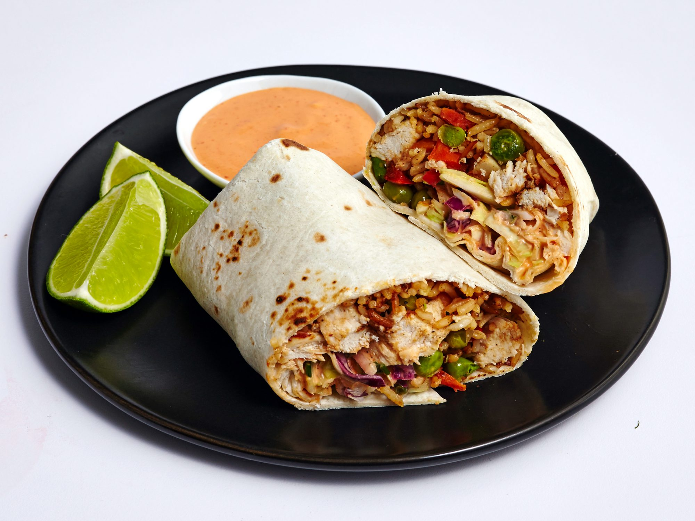

Chicken Burrito Recipe

Description
Chicken burritos are life... and your's has been missing these.
Do chicken burritos really even need any more of a description?
Ingredients:
- 1 cup Old El Paso Thick 'n Chunky salsa
- 1/2 cup water
- 1/2 cup uncooked instant white rice
- 3/4 cup shredded deli rotisserie chicken
- 1/2 cup shredded Cheddar cheese (2 oz)
- 1/4 teaspoon garlic poweder
- 1/2 package (11-oz size) Old El Paso flour tortillas for burriotos (four 8-inch tortillas)
- Shredded lettuce, if desired
- Chopped tomatoes, if desired
- Jalapenos, mandatory
Steps:
- Heat oven to 375°F. In 1-quart saucepan, heat salsa and water to boiling.
Stir in rice. Cover; remove from heat. Let stand 5 minutes.
- Stir chicken, cheese and garlic powder into rice mixture. Spoon 1/2 cup
chicken-rice mixture onto center of each tortilla. Fold bottom 1/3 of
tortilla over filling; fold in sides toward center, leaving top open.
Place seam side down in ungreased 9x9-inch (2-quart) glass baking dish.
- Cover tightly with foil; bake 20 to 30 minutes or until hot. Garnish with
lettuce and tomatoes.